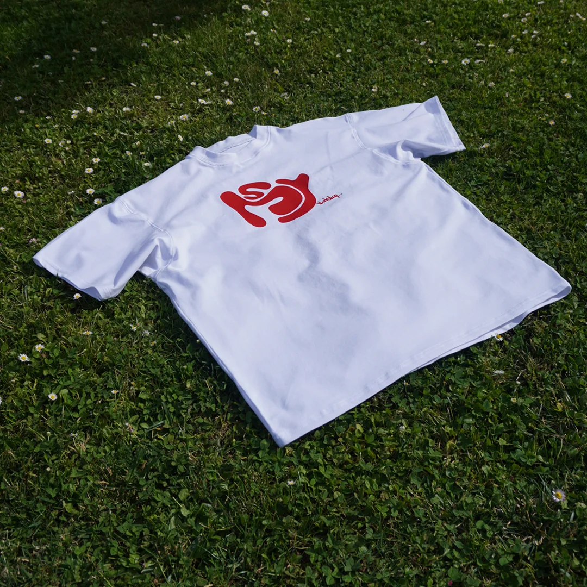

Temple Saint-Martin
Affiche touristique illustrée - travail graphique réalisé en cadre scolaire.
Des études de cas complètes - stratégie, design et mise en ligne - et un espace créations pour les pièces graphiques ponctuelles.

Un projet en tête ?
Me contacter